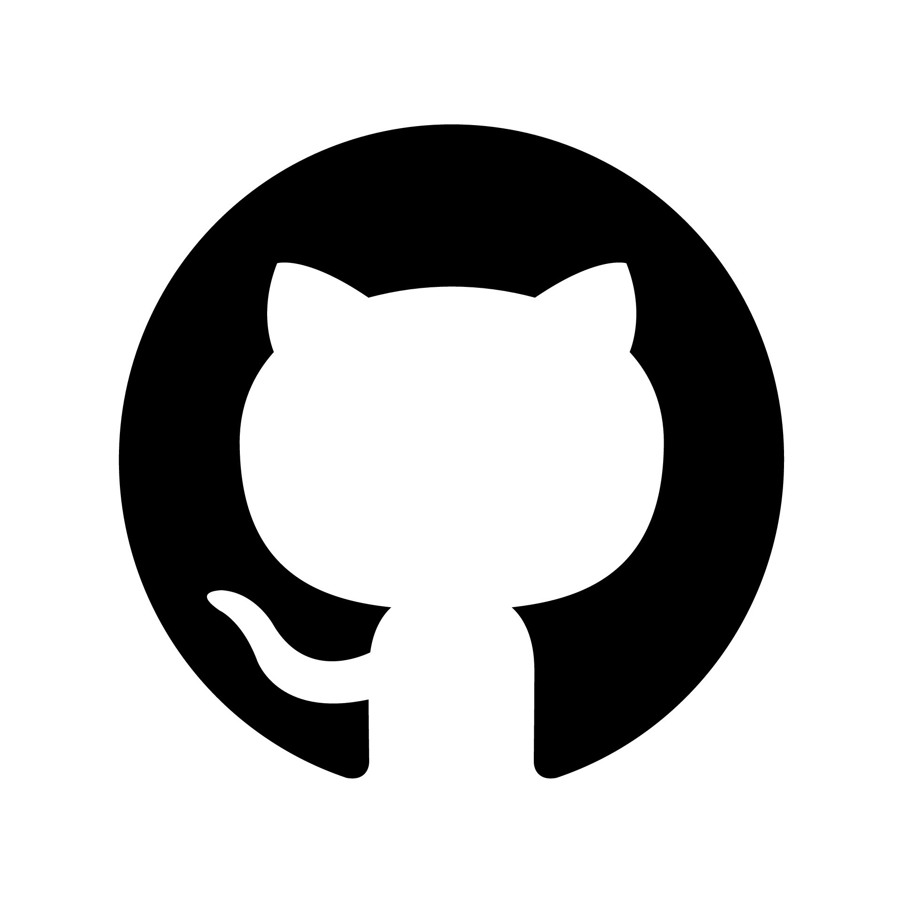
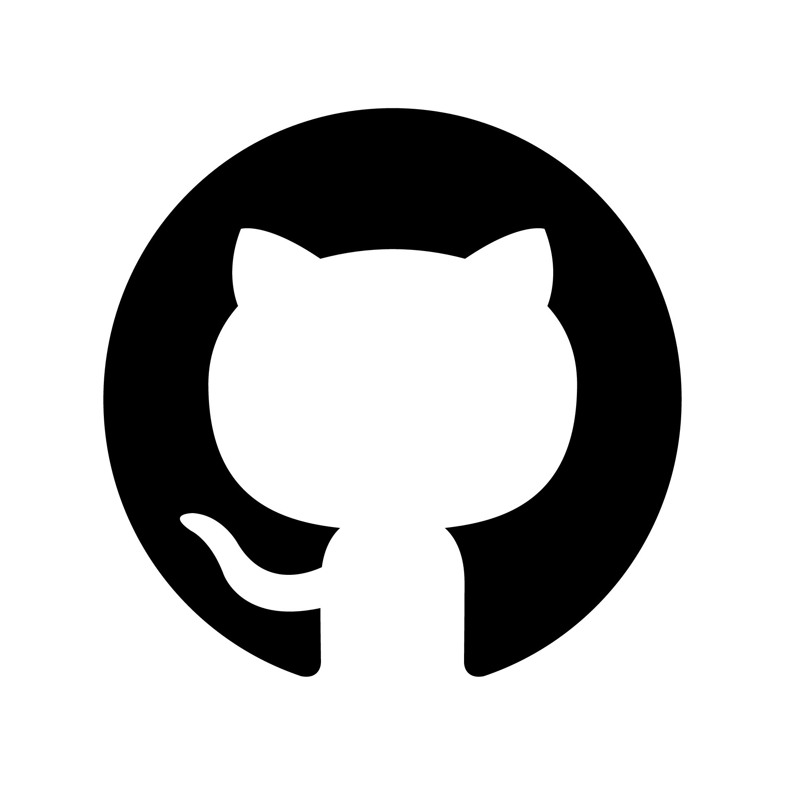

à propos de moi
Développeur informatique en Formation
Actuellement en 2ème année a EPITECH Paris, je suis en formation de développeur informatique. J'aime la programmation informatique mais surtout tout ce qui touche au web. Ce portfolio me permet de me former en HTML-CSS, me permettant d'acquérir certaines connaissances en web. Ma première année était principalement consacrée au langage C#.

 
